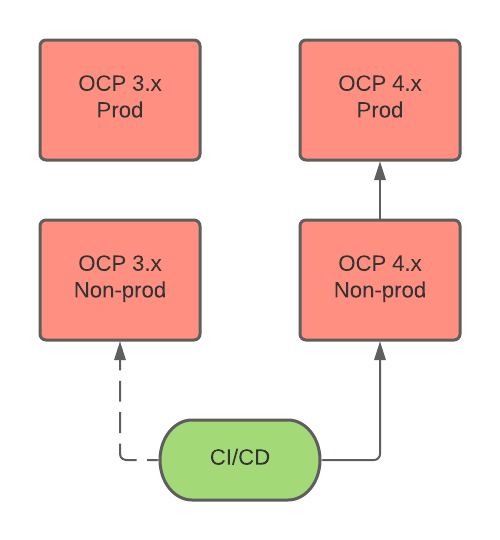
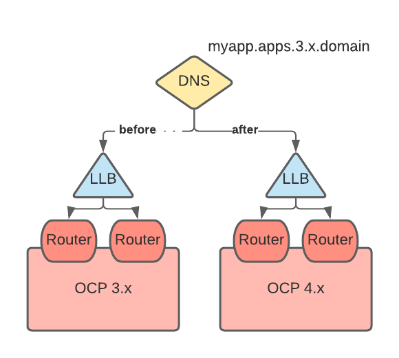

Planning
This section focuses on considerations to review when you plan your migration.
Migration tools
Migration Toolkit for Containers
The Migration Toolkit for Containers (MTC) migrates an application workload, including Kubernetes resources, data, and images, from an OpenShift 3 source cluster to an OpenShift 4 target cluster.
MTC performs the migration in two stages:
- The application workload is backed up from the source cluster to object storage.
- The application workload is restored to the target cluster from object storage.
Migrating Kubernetes resources
MTC migrates all namespaced resources, including Custom Resources. MTC can dynamically discover all the API resources in each referenced namespace.
MTC migrates some cluster-scoped resources. If a namespaced resource references a cluster-scoped resource, it is migrated. Migratable resources include persistent volumes (PVs) bound to a persistent volume claim, cluster role bindings, and security context constraints (SCCs).
Migrating persistent volume data
MTC has two options for migrating persistent volume data:
-
Move: The PV definition is moved from the source cluster to the target cluster without touching the data. This is the fastest option.
-
Copy: MTC copies either a snapshot or the file system of the PV.
See PV move and PV copy for requirements and details.
Migrating internal images
Internal images created by S2I builds are migrated. Each image stream reference in a given namespace is copied to the internal registry of the target cluster.
When to use MTC
Ideally, you could migrate an application from one cluster to another by redeploying the application from a pipeline and perhaps copying the persistent volume data.
However, this might not be possible in the real world. A running application on the cluster might experience unforeseen changes and, over a period of time, drift away from the initial deploy. MTC can handle scenarios where you are not certain what your namespace contains and you want to migrate all its contents to a new cluster.
If you can redeploy your application from pipeline, that is the best option. If not, you should use MTC.
MTC documentation
Migration environment considerations
OpenShift 4 introduces architectural changes and enhancements. The procedures that you used to manage your OpenShift 3 cluster might not apply to OpenShift 4.
You should review the following considerations:
- Important differences between OpenShift 3 and 4 and their impact on migration (Architecture, Installation and update)
- How stored data will be migrated for stateful applications (Storage)
- How much downtime your application can tolerate during migration (Networking)
- How traffic will be redirected during migration (Logging, Security, Monitoring, DNS)
DNS considerations
In a typical migration scenario, the DNS domain of the OpenShift 4 target cluster is usually different from the OpenShift 3 source cluster. This implies that the migrated applications will be have new URLs.
If the source cluster uses the base domain ocp3.example.com and if the default domain of the applications is *.apps.ocp3.example.com, unless special measures are taken, the target cluster must be deployed on a different domain to avoid conflicts: ocp4.example.com, with the default applications defined as *.apps.ocp4.example.com.
An application that uses the URL http://app1.apps.ocp3.example.com in the source cluster will, after migration, use the URL http://app1.apps.ocp4.example.com. In most cases, this is not a desirable result. The application clients must discover the new URL and adapt to it, which may not be a trivial or convenient thing to do.
If preserving the DNS domain of migrated applications is a requirement, several options are possible.
Once an OpenShift 4 cluster has been installed, its default DNS domain cannot be changed for a number of reasons:
-
Creating a route without specifying the host name parameter will use the default DNS domain for the target cluster (*.apps.ocp4.example.com). This can cause confusion when deploying a new application, especially after applying any of the options described next to have the migrated applications in the original source DNS domain.
-
Internal services provided by the cluster like the web console, open authentication, alert manager, and metrics will use the default DNS domain in their URLs. With the exception of the web console, these URLs cannot be easily changed.
Option 1: Isolate the DNS domain of the target cluster from the clients
To hide the OpenShift 4 DNS domain from the clients, a network element like an application load balancer or a reverse proxy is placed between the clients and the OpenShift 4 cluster.
The applications are migrated from the source to the target cluster and receive a FQDN in the default DNS domain of the target cluster (app1.apps.ocp4.example.com).
The original application FQDN (app1.apps.ocp3.example.com) is updated in the DNS server to return the IP address of the network device. The network device contains rules to send requests received for the application in the source domain to the load balancer in the target cluster, using the target cluster domain.
app1.apps.ocp3.example.com ---|reverse proxy|---> app1.apps.ocp4.example.com
The applications can be migrated using any of the network strategies described in Network traffic migration strategies.
You can migrate one application at a time, creating a wildcard DNS record for the *.apps.ocp3.example.com domain that points to the IP address of the load balancer of the source cluster. You then create a specific DNS record for each application, which points to the IP address of the network device in front of the target cluster. Because a specific DNS record has higher priority than a wildcard record, no conflict arises when the application FQDN is resolved.
Some additional considerations for this option are:
-
The network device must terminate all secure TLS connections. Otherwise, if the connections are passed through to the OpenShift load balancer, the FQDN of the target application will be exposed to the client and certificate errors will occur.
-
The applications must support this configuration and they must not return links referencing the target cluster domain to the clients. If such links are leaked back to the client within the returned content, parts of the application may not load or work properly.
Option 2: Set up the target cluster to accept the source DNS domain
You can set up the target cluster to accept requests for migrated applications in the same DNS domain that was defined in the source cluster.
-
Non-secure (HTTP) access:
-
In order for the router in the default ingress controller of the target cluster to accept requests for applications in the source DNS domain (app1.apps.ocp3.example.com), you must create a route in the application's project for the host name that was used in the source cluster:
$ oc expose svc app1-svc --hostname app1.apps.ocp3.example.com \ -n app1-namespaceWith this new route in place, any request for that FQDN will be accepted and sent to the corresponding application pods.
When the application is migrated, a route is created in the target cluster domain (app1.apps.ocp4.example.com). The migrated application can be accessed using both of these host names.
-
You must create a specific DNS record for the FQDN defined in the route host name parameter that points to the IP address of the default load balancer of the target cluster. Specific DNS records take priority over wildcard records.
The FQDN of the application will resolve to the load balancer of the target cluster. Requests for that FQDN will be accepted by the default ingress controller router because a route for that host name is exposed.
-
-
Secure TLS access:
If the application requires a TLS/HTTPS connection, an additional step is required after you have created the route and DNS records:
- Replace the x509 certificate of the default ingress controller created during the installation process with a custom certificate that includes the wildcard DNS domains for both the source and target clusters in the Subject Alternative Name (SAN) field. The new certificate will be valid for securing connections made using either of the two DNS domains.
The certificate must be updated when it approaches its expiration date.
Option 3: Deploy the target cluster in the source cluster domain
Depending on configuration and base DNS domain of the source OpenShift 3 cluster, it might be possible to deploy the target OpenShift 4 cluster in the same DNS domain as the source cluster, using a combination of specific and wildcard DNS entries and public and private DNS zones to avoid conflicts between the clusters.
This option requires careful planning and execution. If it is a viable option, it produces the best results. After migrating the applications, no maintenance of custom certificates, DNS entries, or external network devices is required.
Details about this option are beyond the scope of this document. Contact Red Hat Support for more information.
Migration workflows
MTC workflow
MTC migrates applications from OCP 3 to OCP 4 in production and non-production environments.
The following diagram describes the MTC workflow:

CI/CD workflow
A CI/CD pipeline deploys applications on OCP 4 production and non-production environments.
The following diagram describes a CI/CD workflow:

Network traffic migration strategies
This section describes strategies for migrating network traffic for stateless applications.
Each strategy is based on this scenario:
- Applications are deployed on the 4.x cluster.
- If necessary, the 4.x router default certificate includes the 3.x wildcard SAN.
- Each application adds an additional route with the 3.x host name.
- Optional: The route with the 3.x host name contains an appropriate certificate.
"Big Bang" migration
At migration, the 3.x wildcard DNS record is changed to point to the 4.x router virtual IP address (VIP).

Individual applications
At migration, a new record is created for each application with the 3.x FQDN/host name pointing to the 4.x router VIP. This record takes precedence over the 3.x wildcard DNS record.

Canary-style migration of individual applications
A VIP/proxy with two back ends, the 3.x router VIP and the 4.x router VIP, is created for each application.
At migration, a new record is created for each application with the 3.x FQDN/host name pointing to the VIP/proxy. This record takes precedence over the 3.x wildcard DNS record.
The proxy entry for the application is configured to route X% of the traffic to the 3.x router VIP and (100-X)% of the traffic to the 4.x VIP.
X is gradually moved from 100 to 0.

Audience-based migration of individual applications
A VIP/proxy with two back ends, the 3.x router VIP and the 4.x router VIP, is created for each application.
At migration, a new record is created for each application with the 3.x FQDN/host name pointing to the VIP/proxy. This record takes precedence over the 3.x wildcard DNS record.
The proxy entry for the application is configured to route traffic matching a given header pattern, for example, test customers, to the 4.x router VIP and the rest of the traffic to the 3.x VIP.
Traffic is moved to the 4.x VIP in waves until all the traffic is on the 4.x VIP.